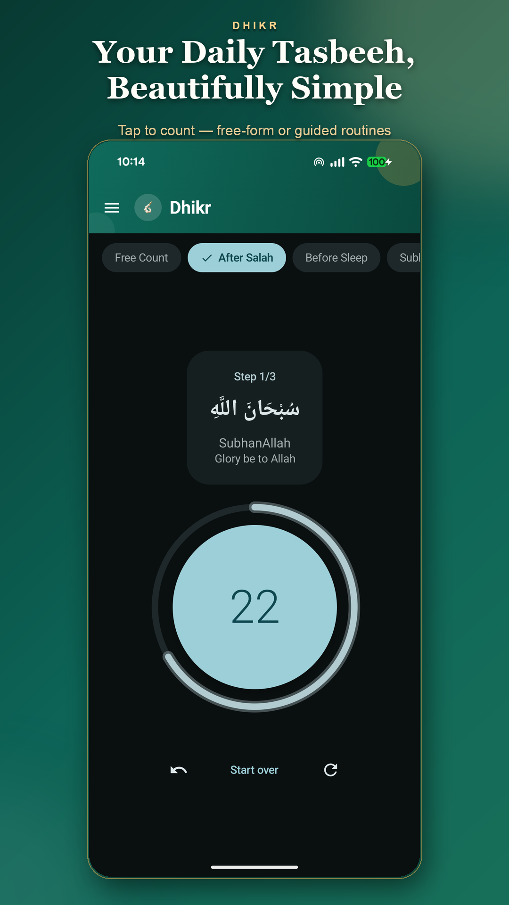
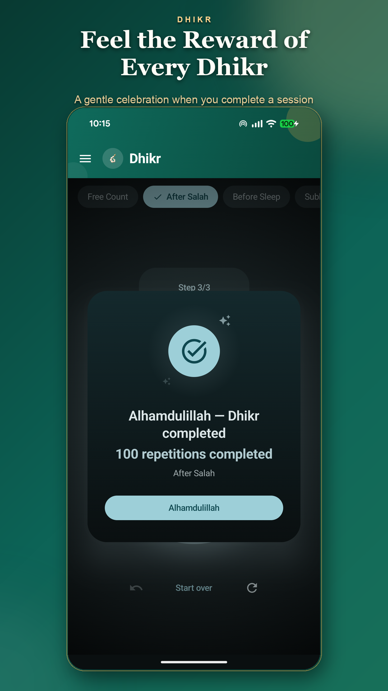
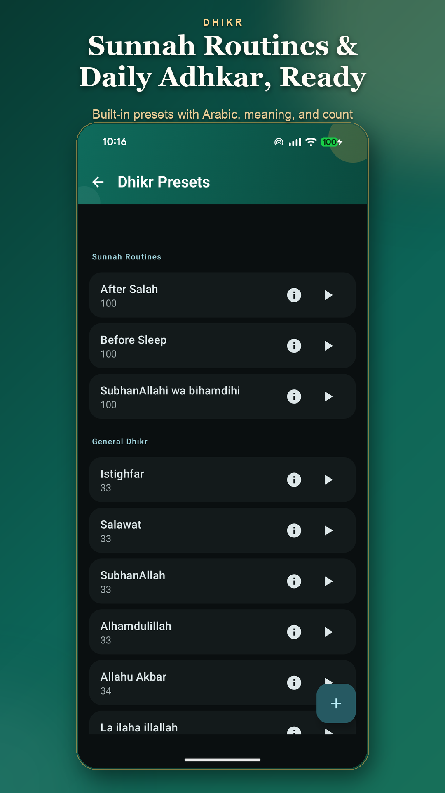
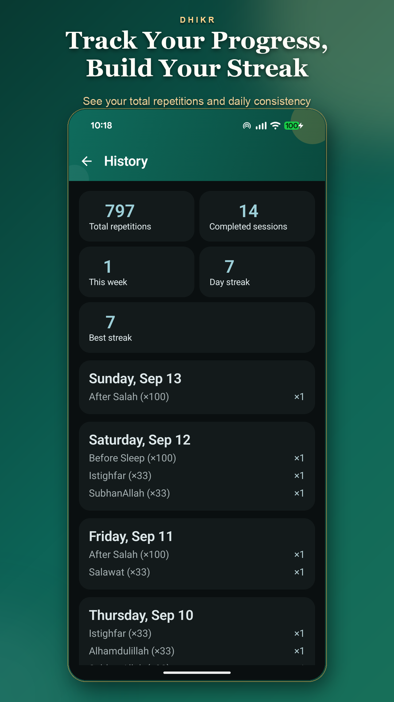
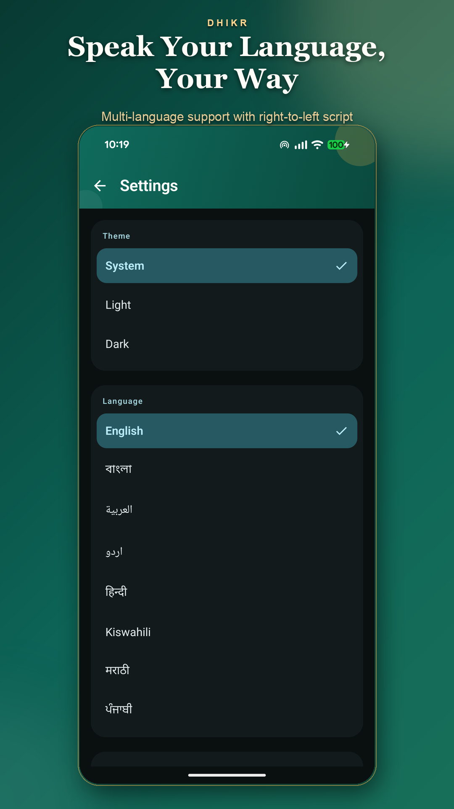
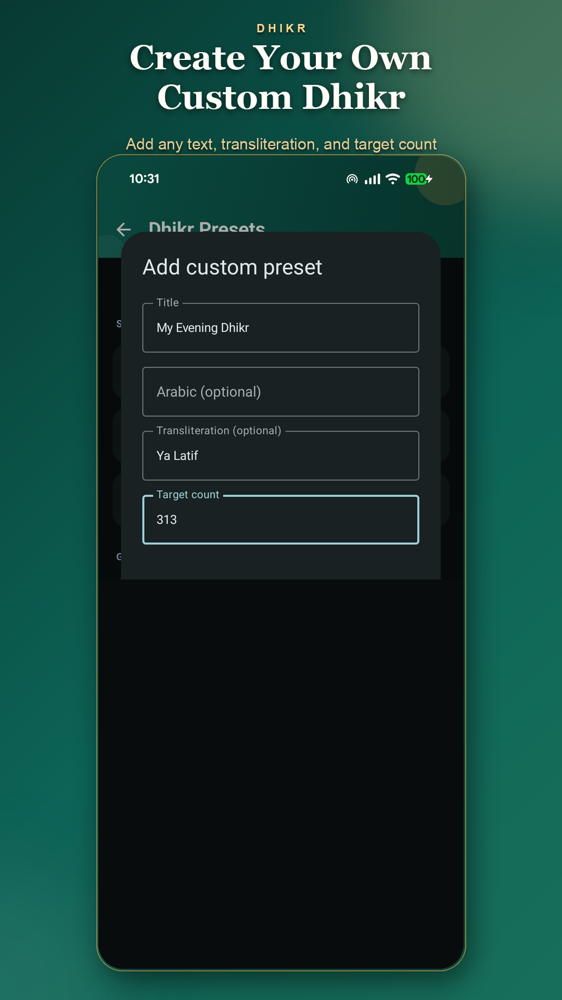

After salah
Choose the built-in routine and follow each step, with the words and count together on screen.
After salah, before sleep, or in a quiet moment of your day. Keep your dhikr close with a simple counter that lets you focus on the words.

ROOM IN YOUR EVERYDAY
Choose the built-in routine and follow each step, with the words and count together on screen.
Open the Before Sleep routine when you’re ready to put the day aside for a moment of remembrance.
Use Free Count for your own dhikr, or save a custom preset with the words and target you choose.
SIMPLE BY DESIGN
A few thoughtful tools to support your routine, without getting in the way.
A large counter keeps things easy to follow. Count freely or work through a guided routine with Arabic text, transliteration and meaning.
Free counting · Guided routinesAdd a custom preset with a title and target count. Include Arabic text and transliteration if you’d like them alongside your counter.
Custom presets · Personal targetsSee completed sessions, total repetitions and daily streaks in History. Set a daily reminder for a time that works for you.
Session history · Streaks · RemindersChoose from eight languages, use a light or dark theme, and adjust sound and haptic feedback to suit your surroundings.
Language · Appearance · Tap feedbackFROM THE APP
From your first tap to your daily history. Tap any screenshot to see it in full.





BEGIN WHERE YOU ARE
No account to create. Counting, routines and history work offline, so you can begin wherever you are.
Open Google PlayPick a preset such as After Salah or Before Sleep, or start with Free Count.
Use the large counter to keep your place. Guided routines show the current words and step as you continue.
Find completed sessions in History. If a gentle nudge helps, choose a daily reminder time in Settings.
A FEW THINGS TO KNOW
Yes. Dhikr is free, has no ads, and doesn’t require an account.
Yes. Counting, routines, history and streaks work offline. Analytics, crash reporting, app updates and opening web links use an internet connection.
English, Bangla, Arabic, Urdu, Hindi, Swahili, Marathi and Punjabi. You can choose your language in Settings, along with a light, dark or system theme.
Yes. Create a custom preset with a title and target count, plus optional Arabic text and transliteration. Free Count is also available when you don’t need a preset.
Your sessions, presets and preferences are stored on your device. There is no Dhikr account or app-operated cloud sync. Android may back up or transfer those records according to your system settings.
Usage analytics is on by default and can be turned off in Settings. Events can include preset names, including custom titles, completion counts and streak milestones. Automatic crash reporting stays enabled separately. Read the privacy policy for details and your choices.
DHIKR FOR ANDROID
A simple companion for the routine you choose.